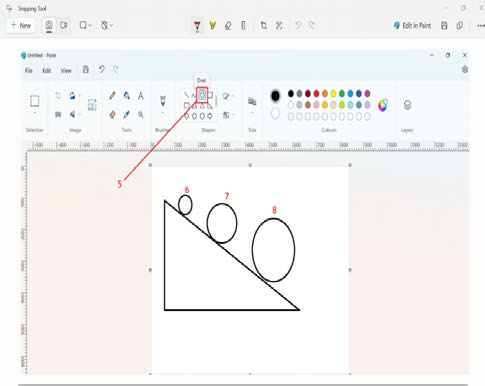

Bofya au tumia mishale kwenye zana ya mduara ‘circle’ kama inavyooneshwa katika Kielelezo namba 8.
Weka mshale wa kipanya au tumia mishale eneo la juu la mteremko, bofya au tumia mishale na shikilia kitufe cha kushoto cha kipanya uchore mduara mdogo kama inavyooneshwa katika Kielelezo namba 8.
Weka mshale wa kipanya au tumia mishale eneo la kati la mteremko, bofya au tumia mishale na shikilia kitufe cha kushoto cha kipanya uchore mduara mkubwa kiasi kama inavyooneshwa katika Kielelezo namba 8.
Weka mshale wa kipanya au tumia mishale eneo la chini la mteremko, bofya au tumia mishale na shikilia kitufe cha kushoto cha kipanya uchore mduara mkubwa kama inavyooneshwa katika Kielelezo namba 8.

Maelezo ya programu fikivu ya Quorum: Skrini ya Paint au Quorum inaonyesha zana ya duara iliyochaguliwa. Kwenye mchoro kuna pembetatu ya mteremko na miduara mitatu ya ukubwa tofauti juu yake, yenye namba 6, 7 na 8. Quorum ni programu fikivu ya kuandika, kuhariri na kuendesha msimbo wa programu kwa kutumia maandishi.Kielelezo namba 8: pembetatu mraba na maduara.
Kuhifadhi kazi yako
Kuhifadhi kazi yako kupitia programu ya ‘Paint au Quorum’, fuata hatua zifuatazo:
Bofya au tumia mishale kwenye ‘File’ kama inavyoonesha katika Kielelezo namba 9(a).
Bofya au tumia mishale ‘Save as’.